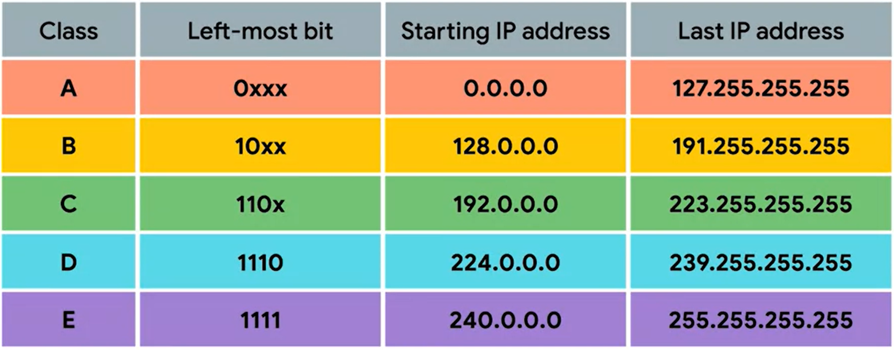

class A - only first octet reserved, in range 0-127 (128 networks)
each record contains 256^3 different IPs (16,777,216)
class B - first 2 octets reserved - range 128-192 (64) giving 64*256=16,384 networks with 256^2=65,536 IPs to each one
and so on..
class D are used for multicasting
most of the class system has been replaced by CIDR (classless inter-domain routing)